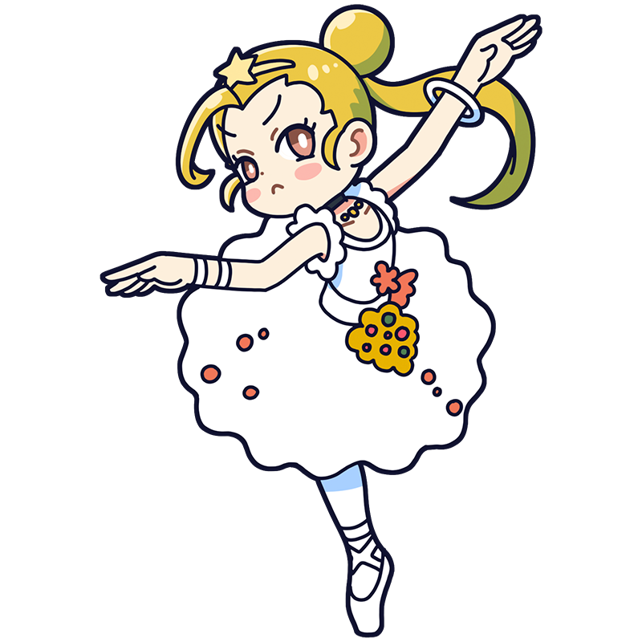

あら、綺麗なキャンバスね。
絵の具を塗らないほうが
いいんじゃない？
ドガ
華麗な舞に輝きを見出す
印象派きっての皮肉屋
印象派の最年少メンバーのバレリーナ。いつも斜に構えている皮肉屋で、言いたいことを言う性格のせいで時には仲間と大喧嘩することも。しかしそれは、己の美に対する厳しさの裏返しでもあるのだ。
様式
印象派出身国
フランス王国
代表作
- "エトワール、あるいは舞台の踊り子"
- "ダンス教室"
- "アブサン" etc."
ドガといえばこの一枚！
エトワール、あるいは舞台の踊り子
バレエを題材とした作品の中でもとりわけ知られている一枚。エトワールは"星"、つまり花形スターのこと。ドガは動きを描くことに興味を持っており、バレリーナをひとつの理想形と捉えていた。鈍い色の中に浮き上がるバレリーナの姿は、まるで光を振りまいているようである。ちなみに、舞台裏から覗く黒いスーツの男は彼女のパトロン。当時のバレエ界では、彼らが強い影響力を持っていたのだ。
制作年
1876年
技法・材質
紙、モノタイプ、パステル
寸法
58 cm x 42 cm
所蔵
オルセー美術館
(フランス)
作品画像出典: https://commons.wikimedia.org/wiki/File:Edgar_Germain_Hilaire_Degas_018.jpg
ドガってどんな芸術家？
エドガー・ドガ
印象派を代表する画家のひとり。屋外の風景を描いた他のメンバーとは異なり、人物の動きに強い関心を寄せ、馬や踊り子などの一瞬の姿をとらえた作品を多く残した。とりわけバレリーナを題材とした作品は広く知られ、今日では彼の代名詞となっている。気難しい性格で、印象派の仲間たちと衝突することもしばしばだったが、目の病気や家族の借金といった数々の困難を乗り越えた苦労人でもあった。
フルネーム
Hilaire-Germain-Edgar De Gas
誕生
1834年7月19日
死没
1917年9月27日(83歳没)